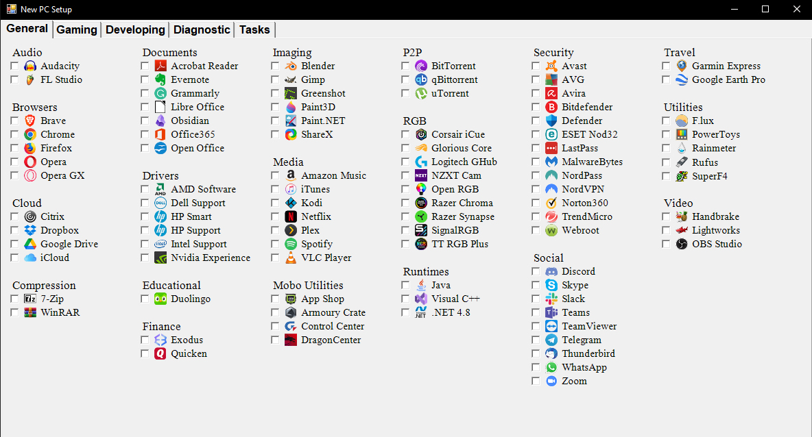

Welcome to Melding Software, your source for essential PC scripts designed to enhance your computing experience. Our mission is to empower users like you with free, reliable software that optimizes your PC. At Melding Software, we understand the importance of a well-functioning computer. That's why we offer a range of scripts tailored to meet your needs, whether you're looking to streamline your PC setup, maintain system health, or improve efficiency.
Explore our collection of scripts, including our popular New PC Setup App for Windows, designed to simplify and automate the process of setting up a new computer. For Windows users, our New PC Setup script provides a comprehensive solution for configuring your system, installing essential software, and optimizing performance. We're currently devoping a New PC Setup App for MacOS. With Melding Software, you can trust that you're getting high-quality software that is easy to use and delivers results. Join us in our mission to make PC maintenance and optimization accessible to all. Download our scripts today and experience the difference Melding Software can make for your PC.
If you find the software helpful, consider making a donation to support our development efforts.
All of our software is completely free. Donations are greatly appreciated.
Explore and download our scripts to optimize your PC.
Choose and download from our selection of PowerShell and Terminal scripts.
Extract the folder and run the script from anywhere, even a flash drive!
Some scripts require an internet connection. Check the descriptions.
Instructions for Windows:
1. Download and extract.
2. Run the "Run Me.bat" file.
3. Click Yes when UAC is prompted.
Instructions for MacOS:
1. Download and extract.
2. Run the .command file.
*REQUIRES INTERNET*
Streamline the setup process for your new PC with this comprehensive GUI script.
Automate installing Apps/running tasks.
Install Windows updates, cleanup, and restart automatically.
When you've checked everything you need, click Tasks tab, and hit the RUN button.

*REQUIRES INTERNET*
Automated maintenance.
*REQUIRES INTERNET*
Automated maintenance.
*REQUIRES INTERNET*
Run DISM and SFC to check and repair Windows corruption.
Checks MacOS file system for errors.
Verify and repair disk.
Get a list of Wi-Fi SSID names and passwords that have been used on the computer.
Then saves it in a txt file in the script directory for an easy get away. ;)
Get the current Wi-Fi SSID name and password.
Then saves it in a txt file in the script directory for an easy getaway. ;)
Requires the Admin password.
For when you're having issues with downloading Windows Updates.
If you still have issues with Windows Updates, try to run the DISM and SFC script.
And if you still have issues, you may need to manually download and install the update.
For when you're having issues with downloading Mac Updates.
If you still have issues with Mac Updates, try to run the Repair Tool script.
When your printer gets stuck and doesn't print. Clears the print spooler.
When your printer gets stuck and doesn't print. Clears the print spooler.
Create a list of the installed Apps and their information.
Saves the data in a folder on the Desktop.
Creates 2 sets of files.
One can be opened in Excel (nicer format), and the other can be opened with Notepad.
Useful if you need to reinstall your software, you'll have a list.
Create a list of the installed Apps and their information.
Saves results to the Desktop.
Useful if you need to reinstall your software, you'll have a list.
Creates a list of the top 10 largest files on your device.
Saves it to the script location.
Figure out what's taking up all your storage space.
Creates a list of the top 10 largest files on your device.
Saves results to the Desktop.
Figure out what's taking up all your storage space.
Removes the bloatware that comes with Windows.
This is included in the New PC Setup script.
Get the system hardware information.
Only comes with Windows 10/11 Pro or Enterprise editions.
Use this script to get Group Policy Editor for Windows 10/11 Home.
Contact Kevin King for inquiries:
Email: meldingsoftware@gmail.com
Melding Software is a passion project founded by Kevin King with a mission to simplify and enhance the PC experience for users around the world. Our journey began with a simple idea: to create software that makes setting up and maintaining a PC easier than ever before. Driven by a desire to empower users with tools that optimize their computing experience, we have developed a range of scripts and applications that cater to the diverse needs of PC users. Whether you're a tech enthusiast looking to customize your setup or a casual user seeking to improve performance, Melding Software has something for you. At Melding Software, we believe that technology should be accessible to everyone.
That's why all our software is free to download and use, ensuring that anyone can benefit from our tools. We are committed to continuously improving and expanding our offerings, so stay tuned for exciting updates and new releases. Thank you for joining us on this journey. Together, we can transform the way people interact with their PCs and make computing a more enjoyable and efficient experience for all.
© 2024 Melding Software. All rights reserved.